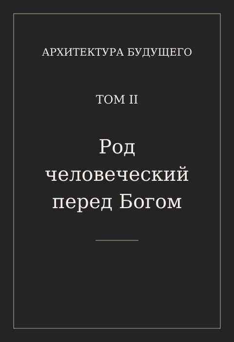

Том II
Род человеческий перед Богом
Оглавление
- Введение. Великий обман
- Глава 1. Кто такой человек перед Богом?
- Глава 2. Ангелы и человек
- Глава 3. Рай и разрыв общения
- Глава 4. Мир, который мы приняли за дом
- Глава 5. Мысль, с которой я согласился
- Глава 6. Когда желание становится господином
- Глава 7. Что общество поощряет
- Глава 8. Что может заслонить Бога в церковной жизни
- Глава 9. Кем ты мог стать